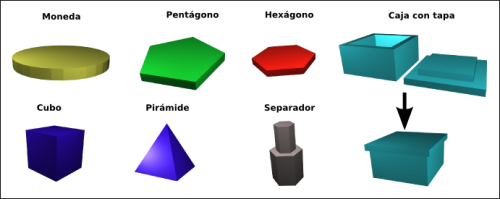

Mientras Andrés y Ricardo están terminando de soldar la electrónica de nuestra Reprap, yo he aprovechado para diseñar algunas piezas sencillas con las que probar la máquina. He utilizado el programa Blender.
He hecho tres figuras planas, con un grosor de 2mm. Una es una Moneda, de tamaño similar a la de 1€. Las otras dos son un pentágono y un hexágono. Estas piezas están hechas para probar, su utilidad no está definida. Pero se me ocurren algunas ideas:
* Crear monedas de juguete para que los niños las usen en sus juegos.
Tipo monopoly, compras en el super-mercado, etc.
* Usar los hexágonos o pentágonos como fichas para diferentes juegos
* Hacerte tus propias fichas de Casino 😉
* Enseñar a los niños las diferentes formas geométricas.
Esto se puede hacer dibujando, pero un objeto 3D que se puede morder, lanzar, etc, es mejor 😀
Otras piezas que he creado son:
* Un cubo de 1cm de arista. Con él se pueden construir dados por ejemplo
* Una pirámide de base cuadrada: Perfecto ejemplo de una pieza que sería
bastante difícil de construir con los métodos tradicionales
* Una mini-caja con tapadera
* Un separador. Se usan como “patas” de los circuitos en electrónica.
Normalmente son metélicos. Sería genial que nos pudiésemos imprimir los nuestros.
Todas las fuentes de las piezas para Blender están disponibles en este fichero: Piezas-basicas-3D-1.tar.gz.
Un magnífico tutorial sobre el uso de Blender para la ingeniería se puede encontrar en este enlace.